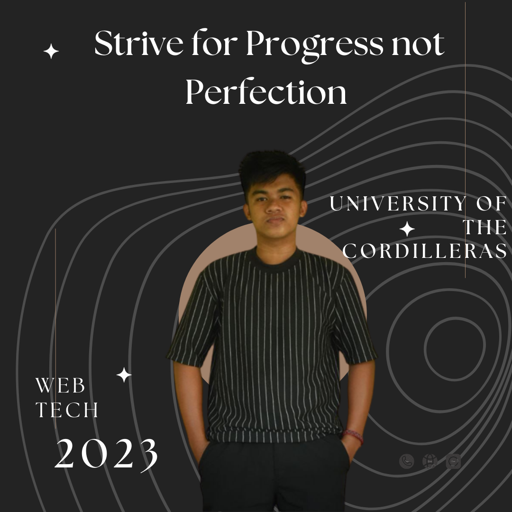

Freshman - Bachelor of Science in Information Technology (Network And Security) - University of the Cordilleras

About Me
I'm Psych Andrei Lopez, a dedicated student currently pursuing my education at the University of the Cordilleras. While I'm in the early stages of my college journey, I have a growing passion for programming, which is a significant part of my coursework. My enthusiasm for technology extends beyond the classroom, as I enjoy experimenting with web development and exploring the world of online gaming. Beyond the classroom, I have a passion for online gaming and the camaraderie it fosters, as well as the physical challenges and teamwork of playing basketball. I'm also an enthusiast of exploring new places through travel.
While I have not yet participated in extracurricular activities, I'm eager to take a leap into the world of sports by planning to join the varsity basketball team this school year. My ultimate goal is to become successful in both my academic pursuits and future career.
Educational Background
-Elementary
Ranom Iloco Elementary School (2010-2016)
-Junior-HighSchool
Bani East Integrated School (2016-2021)
-Senior-HighSchool
Bani East Integrated School(2021-2023)
Skills
Problem Solving
-Developed problem-solving skills through programming challenges and exercises. -Analyzed and resolved coding issues to improve code efficiency.
Programming Languages
Slightly proficient with Python
Self-Learning and Adaptability
Demonstrated the ability to learn new programming concepts and technologies independently. Adapted to changing project requirements and technologies as needed.
Web Development
Created and designed static web pages using HTML and CSS.
Experience
- Independent Web Development Projects-Independent Web Development Projects
-Created and managed personal web development projects, including building websites using languages such as HTML and CSS
-Demonstrated problem-solving skills by troubleshooting and resolving technical issues independently in our house.
-Showcased the ability to learn and adapt quickly to new technologies and tools.
Career Goals
-Becoming a Certified Expert
Set a goal to earn certifications relevant to my chosen IT specialization, such as CompTIA A+, AWS Certified Solutions Architect, Cisco CCNA, or CISSP (Certified Information Systems Security Professional).
-Becoming an Entrepreneur
Because of some of my entrepreneurial aspirations,I consider starting your own IT consultancy or tech startup after graduating
-Contributing to Open Source Projects
Make it a goal to contribute to open-source projects, not only for the learning experience but also for the opportunity to give back to the tech community.
-Making a Positive Impact
Strive to work on projects or in organizations that align with your values and allow myself to make a positive impact on society through technology.
-Balancing Work and Life
Prioritize achieving a healthy work-life balance, which can be especially important in the often demanding IT industry.
Get in touch with me:
Or contact me:
(+63)9129725406
I believe in saying: Whatever you decide, Make sure it makes you happy :>